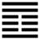

Phong Lôi Ích (益 yì)
Tổn đến cùng rồi thì phải tăng lên, cho nên sau quẻ Tổn đến quẻ Ích. Ích là tăng lên, làm ích cho nhau.
Thoán từ:
益: 利有攸往, 利涉大川．
Ích: lợi hữu du vãng, lợi thiệp đại xuyên.
Dịch: Tăng lên: tiến lên thì lợi làm (làm việc ích) thì lợi, qua sông lớn thì lợi (có gian nan nguy hiểm gì cũng vượt được).
Giảng: Quẻ này trái với quẻ Tổn. Ngoại quái vốn là Càn, bớt một hào dương, thành quẻ Tốn; nội quái vốn là quẻ Khôn, được một hào dương quẻ Càn thêm vào, thành quẻ Chấn. Vậy là bớt ở trên thêm (ích) cho dưới; còn quẻ Tốn là bớt ở dưới thêm cho trên.
Xét về tượng quẻ thì sấm (Chấn) với gió (Tốn) giúp ích cho nhau vì gió mạnh thì tiếng sấm đi xa, mà sấm lớn thì gió mới dữ. Vì vậy gọi là quẻ Ích.
Mình ở địa vị cao mà giúp cho người ở thấp, càng làm càng có lợi, khó khăn gì rồi kết quả cũng tốt.
Thoán truyện giải thích thêm: Xét hào 2 và hào 5, đều đắc trung đắc chính cả; lấy đạo trung chính mà giúp ích cho dân, dân sẽ vui vẻ vô cùng mà đạo càng sáng sủa.
Nhưng quẻ này cũng như quẻ Tổn, tốt hay xấu còn tùy cách thức làm và tùy thời nữa (ích chi đạo, dữ thời gia hành): dân đói không có gạo ăn mà cưỡng bách giáo dục; dân rét không có áo bận mà cấp cho xà bông thì việc giúp ích đó chỉ có hại.
Đại tượng truyện đứng về phương diện tu thân, khuyên: Thấy điều thiện thì tập làm điều thiện.
Thấy mình có lỗi thì sửa lỗi (kiến thiện tác thiện, hữu quá tắc cải).
Ý nghĩa các hào:
1.
初九: 利用為大作, 元吉, 无咎．
Sơ cửu: Lợi dụng vi đại tác, nguyên cát, vô cữu.
Dịch: Hào 1, dương: Lợi dụng (sự giúp đỡ của người) mà làm việc lớn; nhưng phải khéo tính toán, hành động cho đúng, hoàn thiện (nguyên cát) thì mới không có lỗi. Sở dĩ khuyên như vậy vì hào này ở địa vị thấp, không nên lãnh việc nặng nề quá (hạ bất hậu sự dã, lời Tiểu Tượng truyện).
2.
六二: 或益之十朋之龜 弗克違, 永貞吉．王用享于帝, 吉．
Lục nhị: Hoặc ích chi thập bằng chi qui, phất khắc vi, vĩnh trinh cát. Vương dụng hưởng vu đế, cát.
Dịch: Hào 2, âm: Thình lình có người giúp cho mình một con rùa lớn đáng giá mười “bằng”, không từ chối được, rất tốt. Nếu là vua dùng đức để tế Thượng Ðế, Thượng Đế cũng hưởng, mà được phúc, tốt.
Giảng: Hào này âm, nhu thuận, trung chính, nên được người trên giúp ích cho nhiều (như cho mình một con rùa quí – coi hào 5 quẻ Tổn ở trên), không từ chối được, cứ giữ vững đức trung chính thì tốt. Ví dụ: là nhà vua mà có được đức trung chính để cầu Trời, thì Trời cũng giúp cho.
3.
六三: 益之用凶事, 无咎．有孚中行, 告公用圭．
Lục tam: Ích chi dụng hung sự, vô cữu.
Hữu phu trung hành, cáo công dụng khuê.
Dịch: Hào 3, âm: giúp ích cho bằng cách bắt chịu hoạn nạn (hay trừng phạt) thì không có lỗi. Nếu chân thành sửa lỗi, giữ đạo trung (ví với ngọc khuê) thì được người trên (ví với vị công) chấp nhận.
Giảng: Hào này âm nhu, bất trung, bất chính, đáng lẽ không được giúp ích, nhưng ở vào thời ích thì cũng được giúp; có điều là giúp cho bằng cách bắt chịu hoạn nạn (dụng hung sự) để mà mở mắt ra thành người tốt; cũng như trừng trị để sửa lỗi cho vậy.
Nhưng 3 phải thật chân thành sửa mình theo đúng đạo trung thì rồi sự cải quá của nó sẽ được bề trên biết, sự chân thành quá ấy như chiếc ngọc khuê (ngọc trắng mà trong) nó dâng lên bậc “công” (vương công) sẽ được nhận.
4.
六四: 中行, 告公從．利用為依遷國．
Lục tứ: Trung hành, cáo công tòng; lợi dụng vi y thiên quốc.
Dịch: Hào 4, âm: Rán theo đạo trung mà thưa với bậc “công” thì bậc “công” sẽ theo; lợi dụng đạo trung đó làm chỗ tựa thì dù việc lớn như dời đô cũng làm nỗi.
Giảng: Hào này lên tới ngoại quái rồi, có địa vị cao, trách nhiệm quan trọng, thân cận với vua, nhưng kém đức trung nên Hào từ khuyên rán theo đạo trung mà cáo với bề trên (bậc vương công) thì bề trên sẽ nghe mà có thể làm được việc như dời quốc đo.
5.
九五: 有孚, 惠心, 勿周, 元吉．有孚, 惠我德．
Cửu ngũ: Hữu phu, huê tâm, vật vấn, nguyên cát.
Hữu phu, huệ ngã đức.
Dịch: Hào 5, dương: có lòng chí thành làm ân đức, thì chẳng cần hỏi, cũng biết là rất tốt rồi. Thiên hạ ai cũng tin vào đức ban ân huệ của 5.
Giảng: Hào này là ông vua có tài đức, vừa trung vừa chính, có lòng chí thành ban ơn đức cho dân, cho nên rất tốt. Dân do đó rất tin vào đức của vua (chữ ngã ở đây trỏ hào 5).
6.
上九: 莫益之或擊之．立心勿恆, 凶．
Thượng cửu: Mạc ích chi hoặc kích chi. Lập tâm vật hằng, hung.
Dịch: Hào trên cùng, dương: Không ai làm ích cho mình mà có kẻ đả kích mình nữa, là vì không giữ được hằng tâm (lòng luôn luôn tốt), xấu.
Giảng: Hào này dương cương, ở cuối quẻ ích, là có lòng cầu ích đến cùng cực, tất bị nhiều người oán; như vậy chỉ vì không giữ được hằng tâm.
Theo Hệ từ hạ truyện, Chương V, Khổng tử áp dụng hào này vào phép xử thế, khuyên người quân tử làm cho thân mình được yên ổn rồi sau mới hành động; lòng mình được bình dị rồi sau mới thuyết phục người khác; làm cho giao tình được bền rồi sau mới yêu cầu mà khỏi bị dân từ chối.
Khổng tử hiểu “hằng tâm”: là như vậy chăng?
*
Quẻ Tốn vốn xấu mà hào cuối lại tốt, được chữ “cát, lợi hữu du vãng” quẻ Ích này vốn tốt mà hào cuối lại rất xấu, bị chê là “hung”.
Cũng chỉ là luật “mãn chiêu tổn, khiêm thụ ích”, tràn thì cuối cùng sẽ đổ (cuối quẻ Ích), vơi thì cuối cùng được thêm vào (cuối quẻ Tổn). Ðó là luật thiên nhiên mà Nho, Lão, Dịch học phái đều coi là qui tắc xử thế.